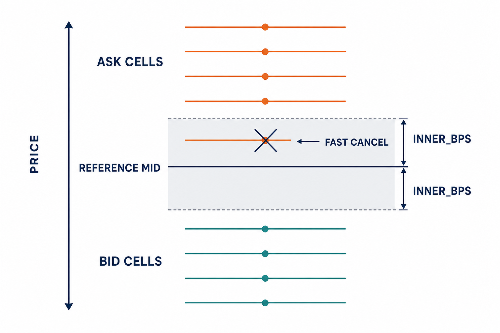
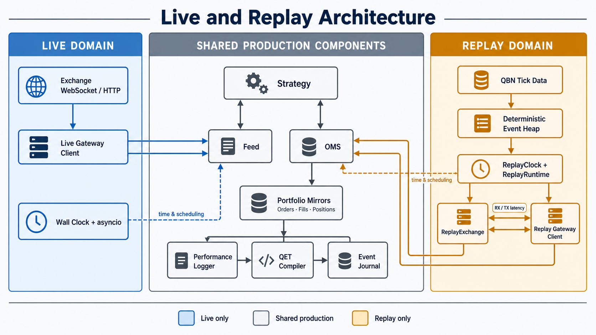
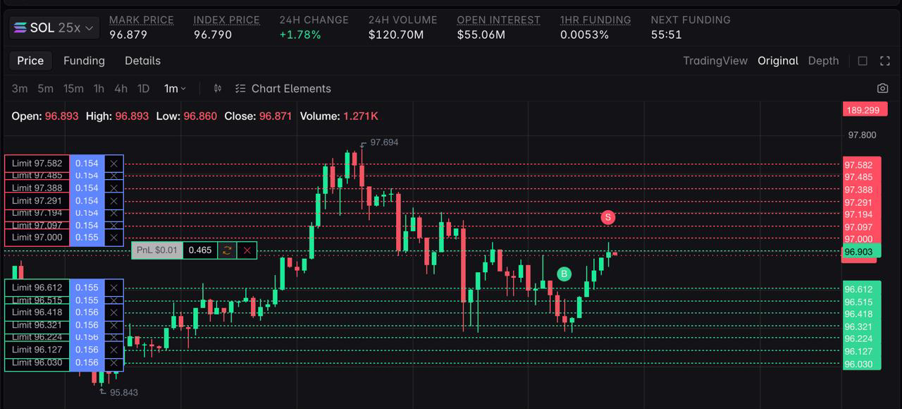

Market Making and Simulations
This tutorial shows how to write a unified codebase for live and simulated market making on different exchanges. We will make use of Quantpylib's gateway connectors, data feeds and order management systems.
Let us first consider the data and portfolio states required for a market making operation. At a high level, a strategy interacts with:
- OMS for order execution, cancellation, lifecycle management, and private-state reconciliation of orders, positions and fills;
- Feed for normalized public market-data streams such as trades, book updates and top-of-book figures.
- Gateway clients for standardized exchange connectivity, account access and contract metadata.
In general, a market maker action triggers include but are not limited to regular internal clock cycles (heartbeats), irregular event-based triggers (watchdogs) and market data arrival (on-tick). Our message replay architecture allows us to support all of these behavior in both production and backtest environments with seamless transition.
This provides a staged environment for exercising the trading system before a strategy goes live. A replay can be used to analyse quote logic, profitability, proper fast-cancel paths wiring and so on under controlled and repeatable market conditions.
In this tutorial, we build a live stink-bidding market maker that targets
slippage-insensitive taker flow. Binance SOLUSDT supplies the external
best-bid-and-ask reference, while passive SOL orders rest on Lighter at
successively deeper prices.
The quotes sit on an arithmetic ladder of STEP_BPS.
The tightest bid and ask steps start from INNER_BPS.
The window moves outward as soon as the closest quote breaches the inner boundary,
but moves inward only when the
next cell would remain at least INNER_BPS + STEP_BPS away. This asymmetry is
a form of hysteresis: small movements in the reference price leave resting quote
prices unchanged instead of causing repeated cancel-and-replace order bounce.
Since this is a simple demonstration, there is no active order skew for inventory bounds.
The fast data path (Binance TOB) performs the latency-sensitive cancel path. A fixed cadence loop reconciles the desirable orders against the OMS's in-memory order state and submits/cancels orders accordingly.

Let's first consider the top-level view of Quantpylib's dual mode architecture. In live mode, AsyncioRuntime uses the wall clock and asyncio event loop to schedule asynchronous tasks. Market data and private account updates arrive through live exchange clients.
In replay mode, ReplayRuntime is injected into the OMS and strategy. It schedules the same asynchronous work on the replay kernel's deterministic event heap. The replay clock is therefore responsible for synchronizing historical market-data delivery and strategy events. For technical documentation, see the replay reference.

This architecture preserves several properties required for high-fidelity simulation:
- Avoid last-mile regressions. The same strategy methods, Feed callbacks, OMS wiring, portfolio mirrors, and cancellation paths run in replay and production. A strategy change exercised in replay therefore reaches live execution through the same business-logic path, avoiding implementation drift.
- Determinism and receive-time fidelity. Market events retain and deliver at the timing observed by the actual user's tick-data capture. Bursts, backpressure and jitter are as-was.
- Exchange-specific RX and TX latency simulation. Public data, outbound orders and cancels, responses, and private updates can travel through separately configured latency paths for each exchange.
- Configurable queue and impact policies. Queue placement, cancellations and the relationship between simulated private orders and historical public depth can be modelled.
- Production-grade event journals and artefacts. Replay uses the same performant logging and journaling path to generate trace artefacts for simulation-fidelity review and strategy analysis.
Let's begin by defining the imports, venue identifiers, and ladder parameters.
import argparse
import asyncio
import logging
import math
import os
from dotenv import load_dotenv
load_dotenv()
import quantpylib.standards.markets as markets
from quantpylib.gateway.master import Gateway
from quantpylib.hft.feed import Feed, FeedCls
from quantpylib.hft.oms import OMS
from quantpylib.hft.qet_compiler import compile_qet
from quantpylib.hft.replay import ReplayNode
from quantpylib.logger import Logger
from quantpylib.standards.models import PRICE_SCALE
BINANCE = "binance"
BINANCE_TICKER = "SOLUSDT"
LIGHTER = "lighter"
LIGHTER_TICKER = "SOL"
BPS = 10_000
LEVEL_NOTIONAL = 15
INNER_BPS = 10
STEP_BPS = 10
LEVELS = 7
class LiveNode:
def __init__(self,logger):
self.gateway = Gateway(config_keys={
BINANCE: {"logger": logger},
LIGHTER: {
"key": os.getenv("LIT_KEY"),
"secret": os.getenv("LIT_SECRET"),
"logger": logger
},
})
self.feed = Feed(
gateway=self.gateway,
exchanges=[BINANCE, LIGHTER]
)
self.oms = OMS(
gateway=self.gateway,
exchanges=[LIGHTER],
logger=logger,
)
self.runtime = self.oms.runtime
async def init(self):
await self.gateway.init_clients()
await self.oms.init()
async def run(self):
await asyncio.Event().wait()
async def cleanup(self):
await self.oms.cleanup()
await self.feed.cleanup()
The LiveNode initialises the appropriate live connectivity clients that can be used by the strategy node.
A BacktestNode satisfies the same interface over a deterministic replay. It
builds a ReplayNode from the supplied
QBN archives (see data archival tutorial) and reuses the replay node'sGateway, Feed, and runtime. The Lighter client loads the actual contract specifications. The latency parameters specifies
order transmission, cancel transmission, and receipt of private account
updates. Most importantly, the replay runtime is injected into the OMS, placing
the strategy, exchange simulation, and portfolio ledgers in one replay-clock
domain.
class BacktestNode:
def __init__(self,qbn_paths,logger):
live_client = Gateway(config_keys={LIGHTER: {}}).exc_clients[LIGHTER]
self.replay = ReplayNode.from_qbn(
qbn_paths,
wrapper_kwargs={
LIGHTER: {
"live_client": live_client,
"order_outbound_latency_ns": 10_000_000,
"cancel_outbound_latency_ns": 4_000_000,
"private_socket_rx_latency": 11_000_000,
},
},
)
self.gateway = self.replay.gateway
self.feed = self.replay.feed
self.oms = OMS(
gateway=self.gateway,
exchanges=[LIGHTER],
logger=logger,
runtime=self.replay.runtime,
)
self.runtime = self.replay.runtime
async def init(self):
await self.replay.init()
await self.oms.init()
async def run(self):
await self.replay.run()
async def cleanup(self):
await self.oms.cleanup()
await self.replay.cleanup()
The strategy itself contains no live-versus-replay branch:
initcreates the stateful in-memory position mirror, subscribes to the Binance BBA, and starts the quote loop.on_reference_bbarecords the current reference mid, periodically recalibrates the arithmetic grid throughrefresh_cells, and dispatches the fastcancel_aggressiveprotection path.shift_cellsapplies the hysteresis thresholds, anddesired_ordersconverts the active integer cells into venue-rounded(side, price, size)levels.sync_quotesreads the OMS order mirror without network IO, cancels stale, duplicate, or incorrectly sized levels, and submits missing post-only orders.cleanupcancels and joins the quote task through the same runtime that created it.
The live node runtime schedules the async work on wall-clock asyncio, while the backtest node schedules it on the replay kernel's deterministic clock and event heap. The strategy code does not need to be aware of the underlying scheduler.
class MarketMaker:
def __init__(self,node):
self.node = node
self.oms = node.oms
self.step = None
self.cells = {}
self.step_ts = None
self.mid = None
self.quote_task = None
async def init(self):
self.positions = await self.oms.positions_mirror(
LIGHTER,
on_delta=print,
) #a live in-memory positions mirror
await self.node.feed.add_bba_feed(
exc=BINANCE,
ticker=BINANCE_TICKER,
feed_cls=FeedCls.PERPETUAL,
on_msg=self.on_reference_bba,
)
self.quote_task = self.node.runtime.create_task(
self.quote_loop(),
name="quote-loop",
daemon=False,
)
async def cleanup(self):
if self.quote_task is None:
return
self.quote_task.cancel()
await self.node.runtime.gather(
self.quote_task,
return_exceptions=True,
)
async def on_reference_bba(self,update):
if update.bid_price <= 0 or update.ask_price <= 0:
return
bid = update.bid_price / PRICE_SCALE
ask = update.ask_price / PRICE_SCALE
mid = (bid + ask) / 2
self.mid = mid
now_ns = self.node.runtime.now_ns()
if self.step_ts is None or now_ns - self.step_ts >= 10 * 60 * 1_000_000_000:
self.refresh_cells(mid,now_ns)
self.node.runtime.create_task(
self.cancel_aggressive(mid),
name="aggressive-cancel",
)
def refresh_cells(self,mid,now_ns):
price_precision = self.oms.price_precision(LIGHTER,LIGHTER_TICKER)
self.step = max(
10 ** -price_precision,
round(mid * STEP_BPS / BPS,price_precision),
)
closest_bid = math.floor(
mid * (1 - INNER_BPS / BPS) / self.step
)
closest_ask = math.ceil(
mid * (1 + INNER_BPS / BPS) / self.step
)
self.cells = {
1: list(range(closest_bid - LEVELS + 1,closest_bid + 1)),
-1: list(range(closest_ask,closest_ask + LEVELS)),
}
self.step_ts = now_ns
def shift_cells(self,mid):
bids = self.cells[1]
asks = self.cells[-1]
while (mid - bids[-1] * self.step) / mid * BPS < INNER_BPS:
bids[:] = [cell - 1 for cell in bids]
while (
mid - (bids[-1] + 1) * self.step
) / mid * BPS >= INNER_BPS + STEP_BPS:
bids[:] = [cell + 1 for cell in bids]
while (asks[0] * self.step - mid) / mid * BPS < INNER_BPS:
asks[:] = [cell + 1 for cell in asks]
while (
(asks[0] - 1) * self.step - mid
) / mid * BPS >= INNER_BPS + STEP_BPS:
asks[:] = [cell - 1 for cell in asks]
async def cancel_aggressive(self,mid):
bid_limit = mid * (1 - INNER_BPS / BPS)
ask_limit = mid * (1 + INNER_BPS / BPS)
now_ns = self.node.runtime.now_ns()
cancel_wires = []
for order in self.oms.orders_peek(LIGHTER).get_orders(
ticker=LIGHTER_TICKER,
copy=False,
):
cancellable = order.ord_status in {
markets.ORDER_STATUS_NEW,
markets.ORDER_STATUS_PARTIAL,
} or (
order.ord_status == markets.ORDER_STATUS_CANCEL_PENDING
and now_ns - order.ts_cancel_ns > 25_000_000
)
if not cancellable:
continue
price = float(order.price)
too_aggressive = (
order.amount > 0 and price > bid_limit
) or (
order.amount < 0 and price < ask_limit
)
if too_aggressive:
cancel_wires.append(await self.oms.cancel_wire(
exc=LIGHTER,
ticker=LIGHTER_TICKER,
oid=order.oid,
cloid=order.cloid,
))
await self.oms.cancel_wires_submit(
LIGHTER,
cancel_wires,
)
def desired_orders(self):
if self.mid is None:
return {}
self.shift_cells(self.mid)
desired = {}
for side, cells in self.cells.items():
for cell in cells:
price = self.oms.rounded_price(
LIGHTER,
LIGHTER_TICKER,
cell * self.step,
)
size = self.oms.rounded_lots(
LIGHTER,
LIGHTER_TICKER,
LEVEL_NOTIONAL / price,
)
if size > 0:
desired[(side,price)] = size
return desired
async def quote_loop(self):
while True:
await self.node.runtime.sleep(1)
await self.sync_quotes()
async def sync_quotes(self):
desired = self.desired_orders()
if not desired:
return
seen = set()
cancel_wires = []
#no IO, peek is a live in-memory mirror synch-ed with websocket
for order in self.oms.orders_peek(LIGHTER).get_orders(
ticker=LIGHTER_TICKER,
copy=False,
):
if order.ord_status == markets.ORDER_STATUS_CANCEL_PENDING:
continue
side = 1 if order.amount > 0 else -1
price = float(order.price)
level = (side,price)
if (
level not in desired
or abs(float(order.amount)) != desired[level]
or level in seen
):
cancel_wires.append(await self.oms.cancel_wire(
exc=LIGHTER,
ticker=LIGHTER_TICKER,
oid=order.oid,
cloid=order.cloid,
))
else:
seen.add(level)
await self.oms.cancel_wires_submit(
LIGHTER,
cancel_wires,
)
order_wires = []
for (side,price), size in desired.items():
if (side,price) in seen:
continue
order_wires.append(await self.oms.order_wire(
exc=LIGHTER,
ticker=LIGHTER_TICKER,
amount=size if side > 0 else -size,
price=price,
tif=markets.TIME_IN_FORCE_ALO,
))
await self.oms.order_wires_submit(
LIGHTER,
order_wires,
)
Both nodes now share the same strategy and core business logic. For live mode,
place the Lighter credentials read by load_dotenv() in .env:
Binance is used only as a public reference-data feed in this example, so it does not require credentials. Live mode submits real orders; use credentials and an account appropriate for the intended environment.
Replay mode runs on QBN archives. In general, for the exchange we actively submit orders on, we would need at least trades and book updates. BBA helps to increase simulation's accuracy by imputing the book between updates. We also need the QBN archives of whatever public data we subscribe from reference exchanges.
Here we pass in the Lighter QBN set and Binance BBA over the same period.
Edit the inline qbn array
to point at your files. The tick-data archival tutorial
shows how to capture these datasets and the
QBN technical reference documents their schemas and readers.
def parse_args():
parser = argparse.ArgumentParser()
mode = parser.add_mutually_exclusive_group(required=True)
mode.add_argument("-live",dest="mode",action="store_const",const="live")
mode.add_argument("-test",dest="mode",action="store_const",const="test")
return parser.parse_args()
async def run(node):
strategy = MarketMaker(node)
try:
await node.init()
await strategy.init()
await node.run()
finally:
await strategy.cleanup()
await node.cleanup()
def main():
args = parse_args()
logfile = "mm.log"
logger = Logger(
name="perf",
filename=logfile,
logs_dir="./",
file_level=logging.INFO,
)
try:
if args.mode == "live":
node = LiveNode(logger)
else:
qbn = [
"./archives/qbn/lighter/perp/bba/2026-08-15.qbn",
"./archives/qbn/lighter/perp/l2book/2026-08-15.qbn",
"./archives/qbn/lighter/perp/trades/2026-08-15.qbn",
"./archives/qbn/binance/perp/bba/2026-08-15.qbn",
]
node = BacktestNode(qbn,logger)
asyncio.run(run(node))
except KeyboardInterrupt:
pass
finally:
logger.shutdown()
if args.mode == "test":
qet_path = compile_qet(logfile)
print(f"QET: {qet_path}")
if __name__ == "__main__":
main()
Run the same script in either mode:

Live mode runs until interrupted; test mode runs until the QBN inputs are exhausted. Both modes write logs to mm.log.
OMS trace records are a subset of the logs generated - see
the HFT event journaler. After a test, the example shuts down the logger and
calls compile_qet(logfile) directly, producing mm.qet. A live deployment
can feed the same records to the QET compiler through the logging pipeline
described in the tutorial.
The resulting QET journal preserves order state transitions, fills, positions, and portfolio ledgers with the correct clock domain. Using the QET and QBN files, we may obtain statistics such as backtest pnl, slippage, markouts, adverse-selection, and strategy performance analytics.